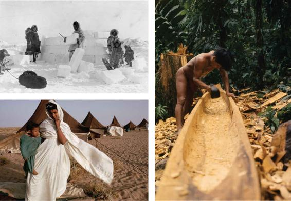

Early Human Culture: Greater Adaptation to Physical Environment
Human culture and human biology are intertwined. Understanding how culture is related to the physical evolution of the human species can, in turn, help us understand the central role of culture in shaping our lives. To understand the forms of society that existed before modern industrialism, we call on the historical dimension of the sociological imagination.
Given both the archaeological evidence and the similarities in blood chemistry and genetics between chimpanzees and humans, scientists believe that humans evolved from apelike creatures on the African continent some 4 million years ago. The first evidence of humanlike culture dates back 2 million years. Early humans fashioned stone tools, hunted animals and gathered nuts and berries, harnessed the use of fire, and established a highly cooperative way of life. Because early humans planned their hunts, they must have had some ability for abstract thought.
Culture enabled early humans to compensate for their physical limitations, such as lack of claws and sharp teeth and slower running speed relative to that of other animals (Deacon, 1998). It freed humans from dependence on the instinctual responses to the environment that are characteristic of other species. The larger, more complex human brain permitted greater adaptive learning in dealing with major environmental changes such as the Ice Age. For example, humans figured out how to build fires and sew clothing for warmth. Through greater flexibility, humans could survive unpredictable challenges in their surroundings and shape the world with their ideas and their tools. In an instant of geological time, we became the dominant species on the planet.
Yet early humans were closely tied to their physical environment because they lacked the technological ability to modify their surroundings in significant ways (Bennett, 1976; Harris, 1975, 1978, 1980). Their ability to secure food and make clothing and shelter depended on physical resources close at hand. Cultures varied widely according to geographic and climatic conditions, from deserts to rain forests, the frozen Arctic to temperate areas. Human inventiveness spawned a rich tapestry of cultures around the world. As you will see later in this chapter, however, modern technology and other forces of globalization pose both challenges and opportunities for future global cultural diversity.
Compare the material culture of (top left) the Inuit building an igloo in Canada, (bottom left) a Bedouin woman beside her tent in the Sahara desert, and (right) an Embera man hollowing out a canoe.
The Earliest Societies: Hunters and Gatherers
For all but a tiny part of our existence on this planet, human beings have lived in small hunting and gathering societies, often numbering no more than 30 or 40 people (see Table 3.1). Hunters and gatherers gain their livelihood from hunting, fishing, and gathering wild edible plants. Such cultures still exist in some parts of the world, such as in India, a few arid parts of Africa, Australia, the Arctic, and the jungles of Brazil and New Guinea. Most such cultures, however, have been destroyed or absorbed by the spread of Western culture. Currently, only about 5 million people in the world support themselves through hunting and gathering—less than 0.1 percent of the world’s population (Hitchcock and Beisele, 2000).
Compared with larger societies—particularly modern societies such as the United States—there was little inequality in most hunting and gathering groups; everyone lived in what would today be regarded as extreme poverty. Because necessary material goods were limited to weapons for hunting, tools for digging and building, traps, and cooking utensils, there was little difference among members of the society in the number or kinds of material possessions; there were no divisions between rich and poor. Differences in position or rank were based on age and gender; men were almost always the hunters, while women gathered wild crops, cooked food, and brought up the children.
Table 3.1TYPES OF HUMAN SOCIETY
TYPE
PERIOD OF EXISTENCE
CHARACTERISTICS
Hunting and gathering societies
50,000 B.C.E. to the present
Now on the verge of complete disappearance.
Consist of small numbers of people gaining their livelihood from hunting, fishing, and the gathering of edible plants.
Few inequalities.
Differences of rank limited by age and gender.
Agrarian societies
12,000 B.C.E. to the present
Most are now part of larger political entities and losing their distinct identity.
Based on small rural communities, without towns or cities.
Livelihood gained through agriculture, often supplemented by hunting and gathering.
Stronger inequalities than among hunters and gatherers.
Ruled by chiefs.
Pastoral societies
12,000 B.C.E. to the present
Today mostly part of larger states; their traditional ways of life are being undermined.
Range from a few hundred people to many thousands.
Depend on the tending of domesticated animals for their subsistence.
Marked by distinct inequalities.
Ruled by chiefs or warrior kings.
Traditional societies or civilizations
6000 B.C.E. to the nineteenth century
All traditional states have disappeared.
Very large in size, some numbering millions of people (though small compared with industrialized societies).
Some cities exist, in which trade and manufacturing are concentrated.
Based largely on agriculture.
Major inequalities exist among different classes.
Distinct apparatus of government headed by a king or emperor.
The oldest and most experienced men usually had an important say in major decisions affecting the group, but differences in power were much less distinct than in larger types of society. Hunting and gathering societies were usually participatory rather than competitive: All adult male members assembled in the face of important decisions or crises.
Hunters and gatherers moved about a good deal within fixed territories, around which they migrated from year to year. Because they lacked animal or mechanical means of transport, they could take very few goods or possessions with them. Many hunting and gathering communities did not have a stable membership; people often moved between camps, or groups split up and joined others within the same territory.
Hunters and gatherers had little interest in developing material wealth; their main concerns were with religious values and ritual activities. Members participated regularly in elaborate ceremonies and spent time preparing the dress, masks, paintings, or other sacred objects used in such rituals.
Hunters and gatherers are not merely primitive peoples whose ways of life no longer hold interest for us. Studying their cultures demonstrates that some of our institutions are far from natural features of human life. We shouldn’t idealize the circumstances in which hunters and gatherers lived, but the lack of inequalities in wealth and power and the emphasis on cooperation are reminders that the world of modern industrial civilization cannot necessarily be equated with progress.
Pastoral and Agrarian Societies
About 15,000 years ago, some hunting and gathering groups started raising domesticated animals and cultivating fixed plots of land as their means of livelihood. Pastoral societies relied mainly on domesticated livestock, whereas agrarian societies grew crops (practiced agriculture). Some societies had mixed pastoral and agrarian economies.
Depending on the environment, pastoralists reared cattle, sheep, goats, camels, or horses. Some pastoral societies exist in the modern world, especially in areas of Africa, the Middle East, and Central Asia. They are usually found in regions of dense grasslands or in deserts or mountain regions. Such regions are not amenable to agriculture but may support livestock.
At some point, hunting and gathering groups began to sow their own crops rather than simply collect those growing in the wild. This practice developed as horticulture, in which the group cultivated small gardens by the use of simple hoes or digging instruments. Like pastoralism, horticulture provided a more reliable food supply than hunting and gathering and therefore could support larger communities. Because they were not on the move, people who practiced horticulture could develop larger stocks of material possessions than people in either hunting and gathering or pastoral communities.
From about 6000 B.C.E. onward, we find evidence of societies larger than, and different from, any that existed before. These societies, which were based on settled agriculture and the development of cities, led to pronounced inequalities in wealth and power, and were ruled by kings or emperors. Because writing was present and science and art flourished, these societies are often called civilizations.
The earliest civilizations developed in the Middle East, mostly in fertile river areas. The Chinese Empire originated in about 1800 B.C.E., at which time powerful states also existed in what are now India and Pakistan. By the fifteenth century C.E., large civilizations also existed in Mexico and Latin America, including the Aztecs of the Mexican peninsula and the Incas of Peru.
Most traditional (premodern) civilizations were also empires: They conquered and incorporated other peoples (Kautsky, 1982). This was true, for instance, of traditional Rome and China. At its height in the first century C.E., the Roman Empire stretched from Britain in northwest Europe to beyond the Middle East. The Chinese Empire covered most of the massive region of East Asia now occupied by modern China.